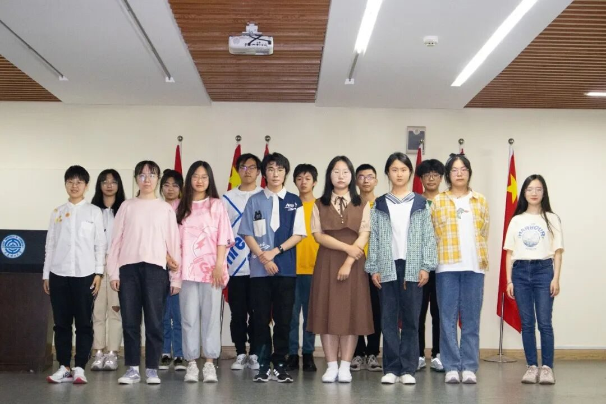

【行者无疆 流眄苏杭】团队见面会
Meet-and-Greet
见
面
会
长街晚风清，窗外月胧明。
在这舒适清凉的仲夏之夜，
新一期的行者们荟萃一堂，
从聆听中走进团队，
于欢笑里加深了解，
在殷殷期望下接过前辈旗帜，
展望新的征途。
幕启
2022/6/1
见面会的开始，队长朱华玮向大家介绍了本次实践活动的时间跨度、开展地点，以及调研主题的灵感来源，并简要介绍安排了团队总体任务，为行者们勾勒活动始廓。
是指教·亦是拳拳心语
⚘
指导教师 邹靓靓老师
|
本次见面会有幸邀请到行者无疆实践团的指导教师——邹靓靓老师，老师首先肯定了本次选题的时代性、革新性，随后基于本次线上线下相结合的活动模式，联系疫情防控的时代背景，着重强调了三个层面的注意要点，建议大家要积极创新，沿袭先前优势的同时不忘开发新形式，同时提醒大家在实践过程中一定要注意安全。
指导过后，邹靓靓老师真情流露，向大家表达自己“早已将行者无疆实践团视为自己看生见长的孩子”的深厚情怀，并对此次实践活动寄以无限期冀。
是接续·更是传承
⚘
接续/传承
|
队长和副队长为大家发放“行者之约”，为新行者们送上热切温暖的欢迎信，具体介绍了各类工作的具体内容，仔细讲解了易出错、需格外注意的细节，结合自己的实战经验，总结出生动的避雷指南，他们认真又不乏幽默的讲解，深深打动在场的每一位成员。
接着进行了“滚雪球”的“破冰活动”，趣味游戏让成员们彼此了解，将每个人的名字都牢记心中，一首《平凡之路》更加拉近距离，抒情的节奏和着缓缓流出的温暖，满是力量又暗含决绝，与即将正式开始的实践活动想传递的精神不谋而合：我们有着心中想要的答案，于是尽管过程会有迷茫，但结局必定精彩。
暂别
2022/6/1
见面会的尾声，行者们合影留念，用相机定格此刻的笑容与情谊，少年意气直冲云霄，少年热血足可灼日。前路浩浩、素心旦旦，行者们一直在路上。

“少年自有凌云志，
不负黄河万古流”，
愿行者们
承前志，传薪火，
且歌且行，
踏上这一场
与飘袅苏杭浪漫邂逅的征程。
来源 | 行者无疆实践团
文字 | 杨婧葳
排版 | 徐晓彤 崔雨琪
审核 | 朱华玮 温兆琪 崔雨琪
行者无疆实践团
QQ：2758025831

长按二维码
与行者们一路流眄苏杭！